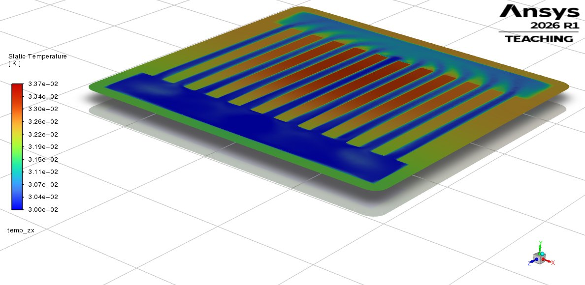

Data Center Cooling

Context
Every watt a server draws ends up as heat, and a data center is in large part a machine for moving that heat out of the building: into air or liquid at the rack, through pumps and heat exchangers, and finally to the outdoors. As chips draw more power, I believe how well that chain works increasingly sets how much computing a building can hold. This page collects my projects from ME 292E, Next-Generation Data Centers and Energy Management Systems, a graduate course at Berkeley in Fall 2026, where each project models one link of that chain.
Each project was individual work, built in industry software: Cadence Reality DC Design for the server halls and the coolant networks, and Ansys Fluent for the cold plate. They are course models, built to the conditions each project set, rather than designs for a real facility. Below I've split them into three parts: the air side, the liquid side, and the loop that ties them together.
Part 1: The Air Side
The second project modeled the airflow through a small server hall, 8.25 by 8.25 meters, with twelve 5 kW cabinets for 60 kW in total. I sized the power distribution and air conditioning units for N+1 redundancy and placed the two 80 kW air conditioning units at the opposite ends of the hot aisle, following a Department of Energy placement guideline, then compared an open room against a contained cold aisle.
In the open room, the average rack inlet temperature was 19.3 °C against an 18 °C supply, with the hottest inlet at 22.9 °C. Containing the cold aisle brought the average down to 18.0 °C and the maximum to 18.1 °C, but on its own it saved no energy, since the fans still ran at full speed, the cooling units still drew 5.8 kW, and the PUE stayed at 1.209.
The savings came from control. A fan controller with a 30 °C setpoint on the average return air cut the airflow by 55%, from 9.6 to 4.31 m³/s, and the cooling units' power by 91%, which brought the PUE down to 1.121 while the hottest rack inlet stayed at 19.2 °C, within the ASHRAE recommended range. Raising the cabinets to 7 kW each lowered the PUE further, to 1.096, but at that point the 92.1 kW load was more than a single 80 kW unit could carry, so the hall lost its redundancy.
Part 2: The Liquid Side
The third project moved down to the chip. I modeled a water-cooled copper cold plate under a 30 by 30 mm chip dissipating 36 W/cm², i.e., 324 W, with water entering at 300 K and 0.5 L/min through eleven parallel channels, and ran it in Ansys Fluent on two meshes of 230,028 and 651,197 cells to check that the answer did not depend on the mesh.
The two meshes agreed to within 1 K on the peak chip temperature, 338.30 and 337.38 K, and to within about 1% on the pressure drop, 66.34 and 66.98 Pa, for a thermal resistance of about 0.12 K/W. The flow in the channels was laminar and did not split evenly: the center channel ran at 0.096 m/s against 0.037 m/s in the channels 12 mm to either side, and the hot spot sat about 6 mm toward the outlet end of the chip.
Part 3: The Loop That Ties Them Together
The first project modeled where the heat ends up: Warren Hall's 25% propylene glycol loop on the Berkeley campus, with an 800 kW load, three parallel pumps holding the flow near 500 gallons per minute, eight dry coolers, and a branch of two cooling towers. I built the network in stages and tested pieces such as a single dry cooler at its rated point before linking them, and the full model converged with 496.8 gallons per minute through the loop and the heat split 51.9% to the towers and 48.1% to the dry coolers.
The fourth project brought the pieces together. It coupled a 720 kW hall of 36 cabinets at 20 kW each with the glycol loop from the first project, with row-level coolant distribution units designed to carry 80% of the heat away as liquid and air conditioning units handling the rest, so that both heat paths share one network. The coupled model solved to full convergence at 1.25 million cells.